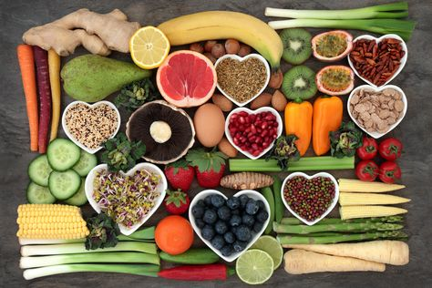

El arte de alimentarse es muy amplio, prefiero dejar las dietas estrictas a un lado y empezar a hablar de Educación Alimentaria através de guía y acompañamiento. Considero que la única manera de generar cambios perdurables es realizándolos de forma progresiva
